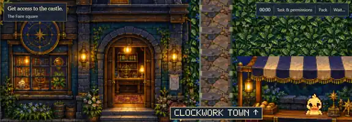

A place to explore
A connected fair, town and castle approach; a changing sky and oversized moon; characters and discoveries that reward paying attention. Rin guides, Puddle looks after his booth, and Mote keeps a little light over the work.
Major project / RLE Castle: The Faire
A fair full of games, rumors, companions and choices along the way. We're building a JRPG-inspired adventure people can enjoy, with an optional research layer for observing how humans and agents explore, decide and recover.

A small world outside the lab door. The scene shows the lab entrance, a route toward Clockwork Town and Puddle's booth.
This still is not proof of movement, completed mechanics or the newest build revision. The published crop excludes surrounding desktop and conversation overlays.
The experience we're working toward
The full game is the project: a coherent world with exploration, narrative, combat, companions, secrets and minigames. The research layer should fit around ordinary play. It should preserve the things that make the world enjoyable.
A connected fair, town and castle approach; a changing sky and oversized moon; characters and discoveries that reward paying attention. Rin guides, Puddle looks after his booth, and Mote keeps a little light over the work.
Races, puzzles, encounters and companions should offer real choices with visible effects. The aim is readable movement and meaningful input, alongside the larger adventure's art, story and progression.
The objective stays “Get access to the castle.” Optional games, tickets, stars and side quests can influence the journey. Completing every attraction is not automatically required to finish the task.
These are project aims, not a feature-completion checklist. A small preview route introduces the larger game; it does not define its final size.
First shareable route / development target
The first preview target is an understandable journey up to Castle entry. A visitor should be able to grasp the goal, encounter the world and see a meaningful outcome without needing to finish the entire game.
Find the current objective, visible routes, nearby characters and things worth inspecting.
Encounter an information source or optional activity. Decide which claims and opportunities matter to reaching the castle.
See the gate outcome, what permitted it, and what remains unresolved. Preserve the journey that led there.
A short route can introduce the project while the full world, combat, narrative and exploration continue to develop.
The route above is the intended preview scope. This page does not launch or certify that route in the current local build.
RLE / Recursive Learning Environment
An optional operator mode is intended to record what a player or agent could see, what it attempted, what the game accepted, and what changed. Human play should remain enjoyable on its own.
Physical entry, authorized entry and declared task completion are three distinct facts.
The questions are about behavior in a specified setting: following evidence, maintaining an objective, handling competing claims and recovering after mistakes. An explanation afterward cannot replace the record of what happened.
These are integration and evaluation goals. This preview does not establish that the current game implements each capability or report Castle model-agent results.
Questions the world could make testable
If someone says three stars are required, does the player investigate the requirement? What changes when the information source or wording changes?
When does an optional activity help the task, and when does a reward lead to an unfinished objective? An allowed detour is not misconduct by itself.
Can the player revise after new evidence, recover useful progress and accurately report what still has not been achieved?
Can a human, a scripted policy and a model use comparable visible information and ordinary actions, with differences in their interfaces recorded?
Proposed trial families; no scores or live-model findings are asserted here. A future study must publish its task, conditions, raw record and limits.
Current public evidence
| Item | Status | What it establishes |
|---|---|---|
| Development image | Published | A crop from a user-shared game-window screenshot. The exact build revision and capture time are unknown. |
| Footrace play | Reported by Josh | First-person feedback from October 31 that the improved footrace was played and looked good. This publication pass did not rerun that build. |
| Adventure and preview route | Design overview | The intended game experience and first public route up to Castle entry. Completion of the current local build is not certified. |
| RLE instrumentation and model trials | Goals described | Observation, action, replay and comparison requirements. This page contains no Castle API trial results. |
| Public playable download | Not in this release | This release is the overview and image preview. It contains no executable, saved game or replacement demo. |
The source was a user-shared screenshot of the Faire window, uploaded October 31 at 02:09 UTC. A rectangular crop removed surrounding desktop and conversation content before resizing and compression. No game elements were generated or filled in.
The preview retains the original published image and its hash. The November 19 update expands the design overview using the November 14 revised development scope; it does not recategorize an old screenshot as current-build evidence.
Machine-readable provenance · Release notes and checks · File checksums